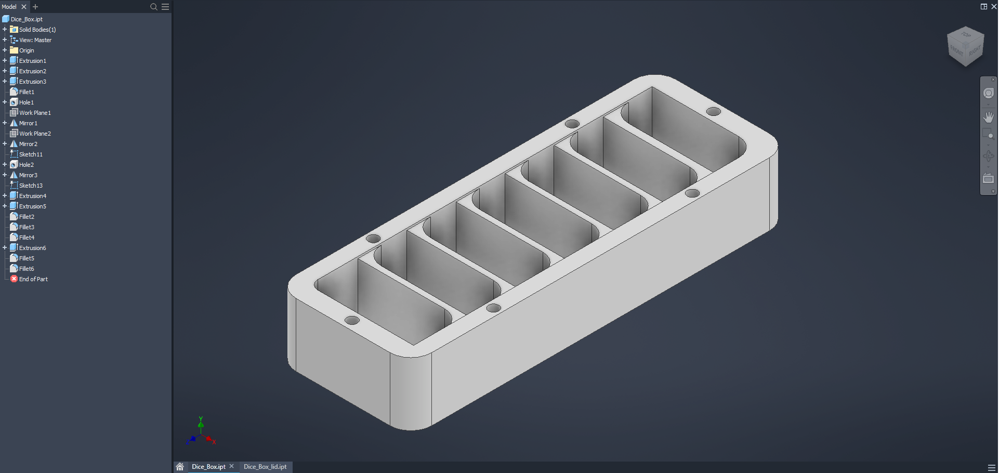
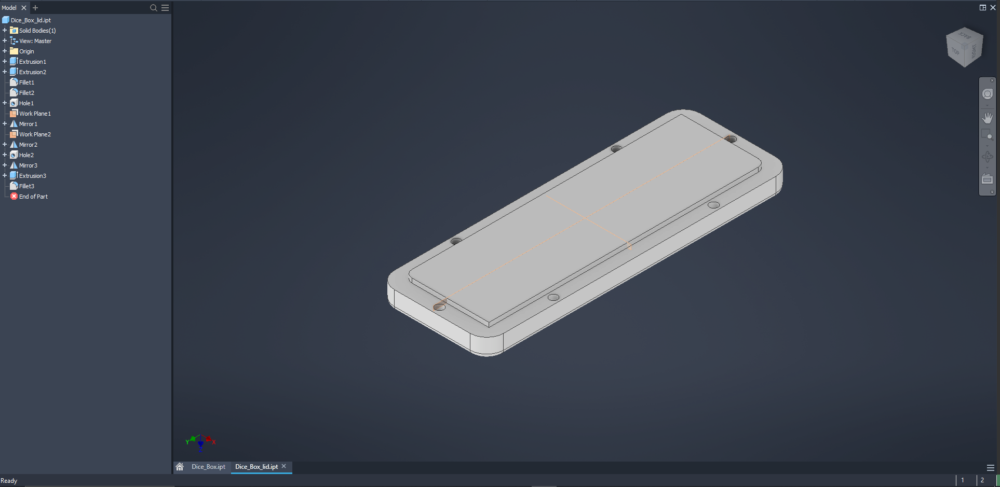

Dice Box
General Description:
As I started getting mode sets of dice, I found that I needed a better way of carrying my dice around. I thought about these wooden dice boxes I saw at conventions and on shops online, and decided, since I am not good at working with wood, why not design and print one out now that I had a 3D printer?
After taking some measurements of some sets of dice, and the magnets I hard, I made up a design on AutoCad Inventor. The stl was slice in CuraSlicer and printed on an Eloogo Neptune 3 Pro.

